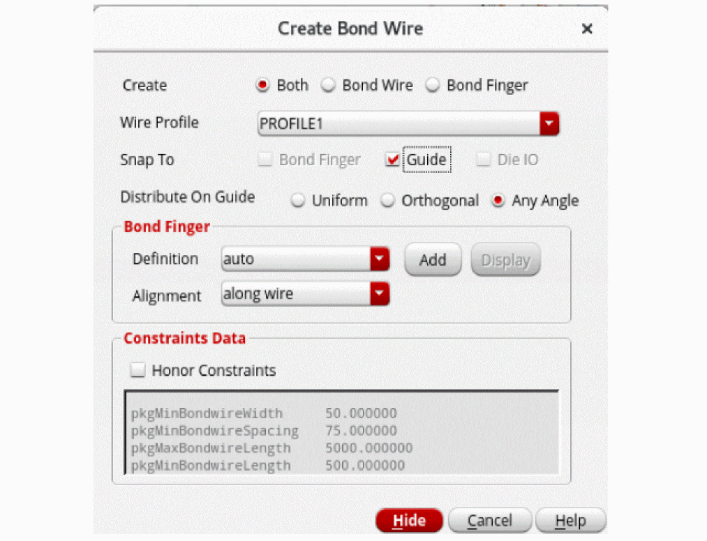
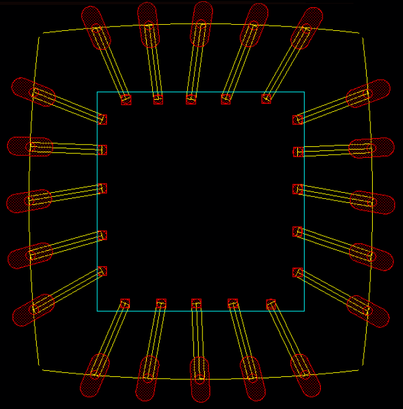

Creating Bond Wires and Bond Fingers
- Select the level-1 pins, IO pads, or bond fingers for which bond wires are to be created. It is recommended that you create bond wires for only one guide at a time. For example, choose all the IO pads for which bond wires are to be created in the guide in the top direction.
- Choose Module – Bond Wire – Create.
- Move the pointer over the required guide to see the valid placement locations for bond wire endpoints or fingers.
-
Press
F3to display the Create Bond Wire form.
 -
Select one of the following options to specify what you want to create:
- Both: Use this option to create both a bond wire and a bond finger.
- Bond Wire: Use this option to create only a bond wire without adding a bond finger, for example to re-bond dies after replacing or swapping them.
- Bond Finger: Use this option to create a bond finger.
Options in the Create section are not available when bond fingers are selected as the source. -
Select a Wire Profile value.
-
Set Snap To to specify whether the created components are to automatically snap to Bond Finger, Guide, or Die IO.
- In the Bond Wire mode, all Snap To options are available.
- In the Both and Bond Finger modes, only Guide is available.
In the Bond Wire mode, the tool supports snapping of bond wires to existing embedded bond fingers at level-1 in design, if available.
For bond wires that originate from bond fingers, Guide is the only available snapping option. - Select Distribute On Guide to one of the following values to specify how bond fingers are to be distributed on the guide. The available options are: Uniform, Orthogonal, and Any Angle.
- Specify the Bond Finger parameters. The Bond Finger section is available for edit only when Create mode is set to Bond Finger.
- Select a bond finger definition from the Definition list.
- Click Add to create a new bond finger definition. The Add Bond Finger Definition form is displayed.
-
Click OK. The new bond finger definition is automatically selected in the Definition list. Select one of the following Alignment types for bond fingers:
- along wire: Aligns bond fingers in the same direction as the bond wires.
- orthogonal to die: Determines the die edge that is closest to IO pads and aligns the bond fingers orthogonal (perpendicular) to this edge. The direction of the bond finger does not change even when it is moved to another die edge.Click Hide.
- Click the Honor Constraints check box to set a higher priority for constraints over the bond wire profile. By default, it is deselected to ensure that bond wire profile has a higher priority than the constraints.
- Click to place the bond wires and bond fingers at the required locations.
-
Follow steps 1 through 6 to create bond wires (and bond fingers) in all directions, as shown in the following image.

Bond wires and bond fingers are created as per your specifications. The bond wire end points are centered to the bond finger and die pins. A single net connects each IO pad to its corresponding bond wire and bond finger.
The Check Against Source command does not report mismatches between wire bond and finger instances.
Related Topics
Bond Wires and Bond Fingers Creation
Creating Bond Finger Definitions
Return to top